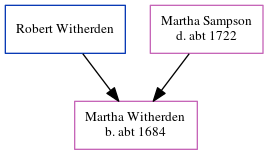

The child of Robert Witherden and Martha Sampson, Martha Witherden, the seven times great-aunt of Nigel Horne, was born c. 1684 and baptized in St Peters, Thanet, Kent, England on Oct 15, 1684.
Parents
Family Tree

Generated by ged2site. Last updated on Jun 11, 2024